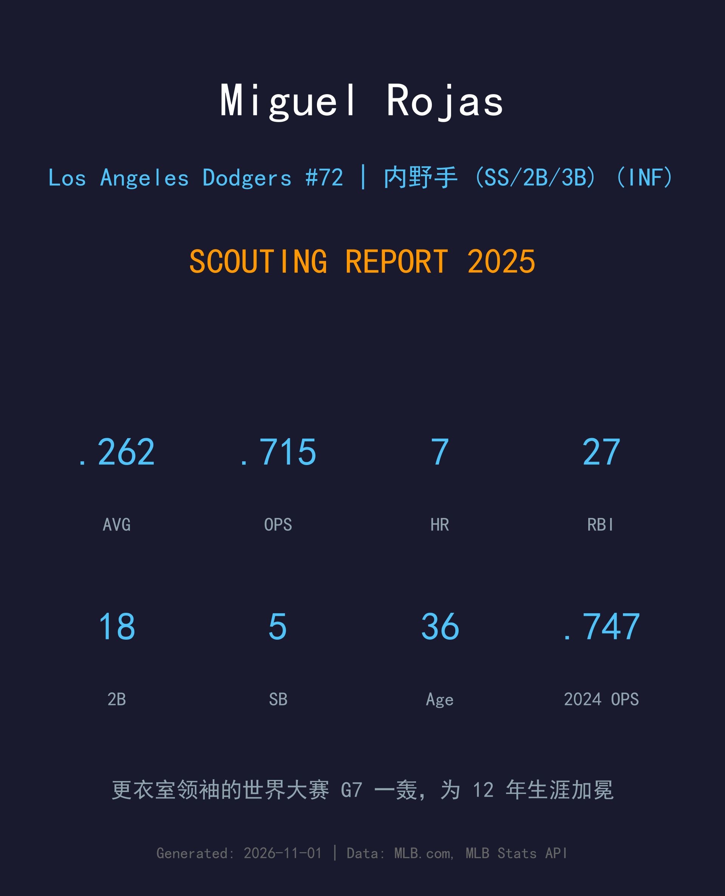
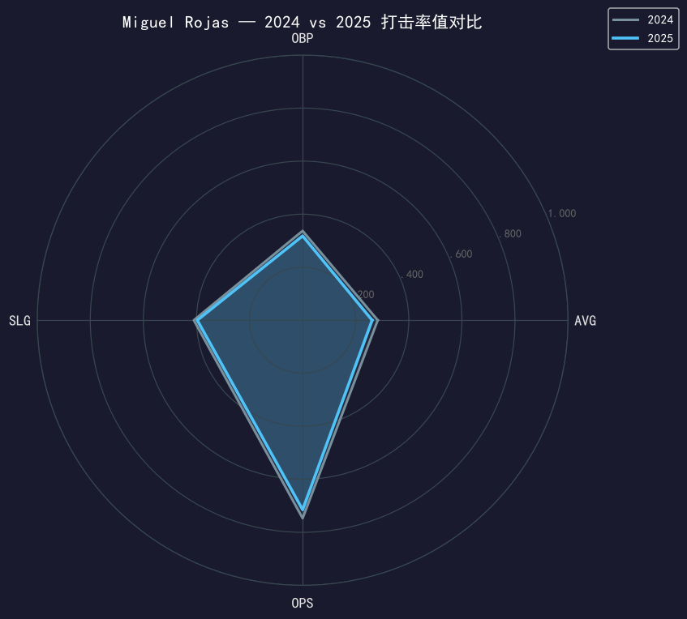
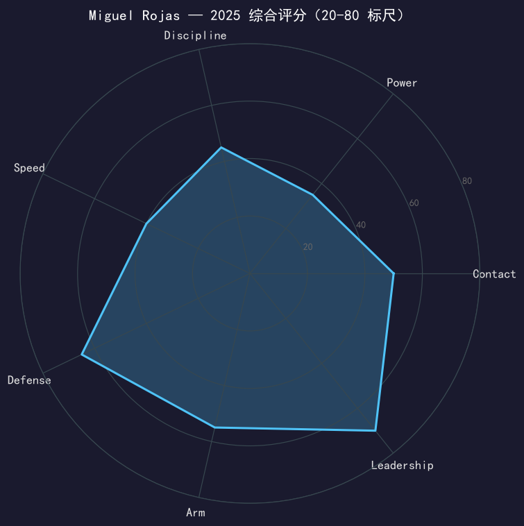

Los Angeles Dodgers #72 | 内野手 (SS/2B/3B) | 右打 | 更衣室领袖 · "Miggy Ro"

Miguel Rojas 的 2025 年是一部好莱坞剧本：常规赛他是道奇的更衣室心脏——746 个守备局只犯 4 次错误，代打 14 打席 1.252 OPS 含一支代打全垒打，还在 4 场比赛里客串投手（最后 2 局无失分）。然后是世界大赛第 7 场，他把整个季后赛仅有的一发全垒打（387 英尺）留在了最重要的那个夜晚。
从数据看，.262/.318/.397、OPS .715 较他的生涯年 2024（.747）小幅回落，但对左投 .879 OPS 的杀伤力依旧。36 岁的他运动能力自然衰退，但守备位置感、配球阅读与领导力都在增值——2024 年队友票选的 Roy Campanella 奖（最佳道奇精神奖）不是白拿的。
他的 2023 年续约包含 2026 赛季球队选项——在世界大赛 G7 轰出那支全垒打之后，这个选项的谈判气氛已经完全改变了。
.283/.337/.410 为生涯最佳率值（WAR 3.4 生涯最高）；队友与教练票选 Roy Campanella 奖——道奇每年授予「最能体现球队精神」的球员。球队在他有安打的比赛 24 胜 0 负。
三垒 23 场先发、二垒 22 场、游击 10 场，746 局仅 4 失误；代打 6-for-14（1.252 OPS）含亚特兰大客场代打全垒打；4 场登板投球，生涯投球局数悄悄来到两位数。
整个 10 月仅外卡轮 3 安打的他，在 G7 从 Jeff Hoffman 手中轰出 387 英尺全垒打——这是他全年对同侧投手的第 2 轰，也是职业生涯最重要的一击。
职业生涯从道奇出发（2014 年首秀），辗转迈阿密十年后于 2023 年回归，连续两个赛季随家乡球队夺冠。

| 赛季 | G | PA | AVG | OBP | SLG | OPS | HR | RBI | 2B | BB | SO | SB |
|---|---|---|---|---|---|---|---|---|---|---|---|---|
| 2024 | 103 | 337 | .283 | .337 | .410 | .747 | 6 | 36 | 21 | 23 | 34 | 8 |
| 2025 | 114 | 317 | .262 | .318 | .397 | .715 | 7 | 27 | 18 | 24 | 46 | 5 |
温和的小幅回落，完全在 36 岁老将的正常衰减曲线内。两个结构性亮点值得注意：第一，对左投 .879 OPS / 对右投 .594 OPS 的极端分裂让他的使用价值高度可编程——他几乎就是为大场面 matchup 而生的武器；第二，三振数（46）对 317 个打席仍然优秀，他的击球_contact 是天赋级的。7 轰数字虽小，但每一轰的 context 价值都极高。
Rojas 的守备早已过了靠 range 吃饭的阶段——他的价值是预判、第一步启动与传球时机。746 局 4 失误、横跨三个内野位置的稳定性，让他在 36 岁依然是道奇内野防守的「最终答案」。当季后赛需要守下最后一个出局数时，球总会往他的方向来。
6-for-14、1.252 OPS 的代打成绩是全队最锋利的 pinch-hitting 数据，亚特兰大客场那支代打全垒打直接把这项技能变成了教练组的固定选项。老将的这项技能在十月价值千金——他世界大赛 G7 的那支全垒打，某种意义上就是「关键时刻锁定一颗球」的能力兑现。
4 场登板、生涯投球累积 13 局 ERA 两位数——数字不好看，但这正是他的球队角色：在 16-0 溃败时吃掉局数，保护牛棚。最后两次登板无失分，说明他连「垃圾时间投手」都在认真进化。
常规赛的他是完美的配角：守稳内野、对左投开炮、代打建功、垃圾时间投球、带新人（把 #11 让给佐佐木隆太郎，自己改穿 72）。季后赛前两轮他的棒次很安静，直到 G7 的那个打席——387 英尺，把他 12 年大联盟生涯的所有等待一次性兑现。这是棒球能写出的最好的剧本之一。

防守与领导力双 A 的老将，价值在数据之外
B 级 / 冠军队老将内野
道奇 2025 季后赛之路：外卡轮 2-0 红人 → NLDS 3-1 费城人 → NLCS 4-0 酿酒人 → 世界大赛 4-3 多伦多蓝鸟（二连霸）。
| G | PA | AVG | OBP | SLG | OPS | HR | RBI | BB | SO |
|---|---|---|---|---|---|---|---|---|---|
| 8 | 20 | .278 | .278 | .444 | .722 | 1 | 2 | 0 | 2 |
Miguel Rojas 站在职业生涯的十字路口：2023 年续下的合约包含 2026 赛季球队选项——在世界大赛 G7 的英雄时刻之后，无论道奇执行选项还是重新谈判，留队都是大概率事件。36 岁的他已经把角色从「主力游击」完美转型为「冠军队老将内野」，下一步是教出下一个接棒的人（Kim 与 Freeland 都在他的言传身教名单上）。
短期：2026 选项执行/续约，继续担任内野保险与 matchup 武器
中期：逐步移交二游位置给 Kim 等新血，转型纯 mentor 角色
长期：道奇生涯谢幕后的教练/管理层席位在向他招手
Miguel Rojas 的棒球生涯是一个完美的圆：2014 年 6 月 6 日，他以道奇球员身份登上大联盟；同年底他被交易到迈阿密（Dee Gordon 交易的一部分），在佛罗里达一守就是九年。2023 年 1 月，道奇把他换了回来——游子归乡时，他已是一位身经百战的老将。
回归后的两年是他职业生涯最幸福的两年：2024 年他打出生涯最佳赛季并捧起 Roy Campanella 奖（道奇授予「最能体现球队精神」球员的年度荣誉）；2025 年他让出穿了多年的 #11 给新人佐佐木隆太郎，自己改穿 72 号，并在世界大赛 G7 轰出 387 英尺的全垒打，为 12 年生涯加冕。
场下的 Rojas 是公认的更衣室粘合剂——2017 年他还在迈阿密时，与 Martín Prado 一起赢下球队内部的梦幻橄榄球联赛冠军。从洛斯泰克斯的棒球少年到洛杉矶的冠军老将，他的故事里写满了「正确的方式」。